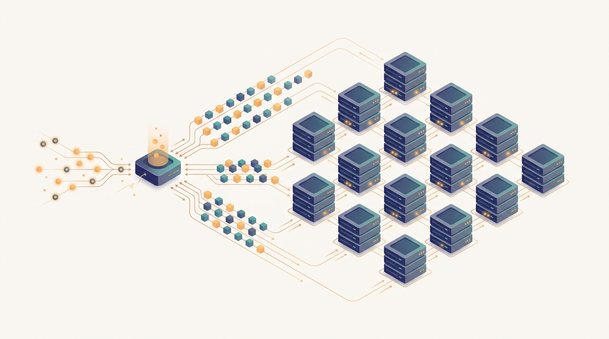

"The web tier was proud it could handle a million stateless requests a second. Then a model replica explained that each of its requests carries a gigabyte of KV cache, prefers to travel in batches, and gets very upset if you route it to a cold machine."
A Load Balancer Learning the Difference
This is the chapter where the optimized single node becomes a distributed service: a fleet of replicas, a batch-aware load balancer, autoscaling on GPU signals, shared accelerators, warm pools, and failover, all of it coordination across machines rather than efficiency within one. Chapter 22 was the book's one labeled scale-up prerequisite, and its job was to cost the unit: tokens per second, memory per sequence, the concurrency a single accelerator can hold. Those numbers were always meant to be multiplied, and this chapter is the multiplication. The work here is not to make a node faster but to run many nodes as one system, and that brings in the distributed problems the rest of the book has been training you to see. Routing is not round-robin once requests want to arrive in batches and replicas hold per-session state in their KV caches. Autoscaling is not a CPU threshold once the resource that saturates is GPU memory and the signal that matters is queue depth. Sharing a machine is not free once two models or two tenants contend for the same accelerator. Starting a replica is not instant once a large model takes seconds to load into device memory, so the system keeps warm pools to hide that latency. Staying up is not automatic once a single GPU failure can drop a slice of capacity, so the fleet needs failover and redundancy. The chapter is the general theory of serving any model across a fleet; the next chapter specializes it to the hardest case, a model so large it does not fit on one machine. Here the model still fits on a node, and the entire problem is how many nodes to run and how to coordinate them.
Chapter Overview
This chapter opens the genuinely distributed half of Part V. The prologue measured one serving node; now the book spreads that node across a fleet and asks the coordination questions that a single machine cannot answer. Serving a model at scale is a distributed-systems problem with its own character: the requests are stateful, they prefer to be batched, the resource that runs out is GPU memory, and the replicas take real time to start. The eight sections build the serving system that handles all of this, in the order an engineer meets the problems.
The sections fall into three movements. The first names what makes model serving its own discipline and lays the routing foundation: Section 23.1 contrasts model serving with web serving, and Section 23.2 builds replicas, load balancing, and the batch-aware routing that respects how accelerators actually run requests. The second movement is the fleet's elasticity and sharing: Section 23.3 separates online from batch inference across the fleet, Section 23.4 autoscales on GPU utilization and queue depth, and Section 23.5 packs multiple models and tenants onto shared accelerators. The third movement is the fleet's reliability: Section 23.6 hides large-model loading and cold starts behind warm pools, Section 23.7 keeps the service available through failover and redundancy, and Section 23.8 surveys the serving frameworks that package these patterns into systems you run in production.
Read in order, the eight sections take you from "model serving is not web serving" to a working mental model of an elastic, reliable serving fleet: route requests to replicas in a way that fills GPU batches, split online from batch workloads, scale the replica count on the signals that actually predict saturation, share accelerators across models and tenants without contention surprises, keep replicas warm so cold starts do not leak into tail latency, survive the failure of any single machine, and reach for Triton, Ray Serve, or KServe rather than rebuilding the control plane by hand. The argument is cumulative and it points forward: every pattern here assumes the per-node profile of Chapter 22 as its input and hands a running fleet to the large-model serving of Chapter 24.
Prerequisites
This chapter assumes the per-node serving vocabulary the previous chapter built and the evaluation discipline from Part I. From Chapter 22: Per-Node Inference Efficiency you carry the unit economics this chapter multiplies: the latency and throughput a single accelerator delivers, the KV cache and how it bounds concurrency, continuous batching, and the translation from a measured per-node profile into a replica count. Every routing, autoscaling, and capacity decision here takes those numbers as its input, so a reader who has not seen why one node's profile sets fleet cost will find the fleet arithmetic ungrounded. From Chapter 5: Evaluating Distributed AI Systems you carry the measurement framework this chapter leans on constantly: latency percentiles and tail behavior, throughput under load, utilization, and the service-level objectives that turn "the fleet is slow" into a number you can autoscale against. Beyond that the chapter assumes comfortable Python, a working picture of what a GPU's memory and compute are, and the general distributed-systems concepts of replication, load balancing, and failure that earlier parts introduced. No prior experience with a specific serving framework is needed; Section 23.1 builds the serving-versus-web-serving framing from the ground up before any system appears.
Learning Objectives
- Explain why model serving differs from stateless web serving, in particular how GPU batching, large model size, and KV-cache statefulness change routing, capacity, and scaling decisions.
- Design a serving tier as replicas behind a load balancer, and reason about batch-aware routing that fills GPU batches rather than treating each request as independent.
- Distinguish online (low-latency, interactive) inference from batch (high-throughput, offline) inference across a fleet, and choose the right execution mode for a workload.
- Autoscale a serving fleet on the signals that predict saturation, GPU utilization and queue depth, rather than on CPU load, and reason about scale-up and scale-down behavior under bursty traffic.
- Pack multiple models and multiple tenants onto shared accelerators, and reason about isolation, contention, and fairness in multi-tenant GPU serving.
- Hide large-model loading and cold starts behind warm pools, and quantify how model load time affects tail latency and the cost of keeping replicas warm.
- Keep a serving fleet available through failover, redundancy, and health checking, so the failure of any single replica does not drop the service.
- Map the responsibilities of production serving frameworks such as NVIDIA Triton, Ray Serve, and KServe onto the patterns developed in the chapter, and choose among them for a given deployment.
If you keep one thing from this chapter, keep this: a distributed inference system turns the optimized single node of Chapter 22 into an elastic, reliable service by running many replicas and coordinating them, routing requests so GPU batches stay full, autoscaling on GPU utilization and queue depth, sharing accelerators across models and tenants, hiding cold starts behind warm pools, and failing over when a machine dies. Read forward, the sections build that service in the order the problems arrive: first why serving is not web serving, then replicas and batch-aware routing, then online versus batch execution, then autoscaling on the right signals, then multi-model and multi-tenant sharing, then loading and warm pools, then availability and failover, and finally the frameworks that package it all. Read as a question, the chapter asks of any model you have already costed on one node: how many replicas does the traffic need, how do requests reach them without starving the batch, when does the fleet grow and shrink, how do workloads share a GPU, how do you keep replicas warm, and how does the service stay up when one of them fails. The roadmap below walks the eight sections that answer it, and the last one hands a running fleet to the large-model serving chapter that comes next.
Chapter Roadmap
- 23.1 Why Model Serving Differs from Web Serving Shows how GPU batching, large model size, and KV-cache statefulness make model serving its own discipline, so that the stateless-request assumptions of web serving break and a different set of routing and scaling rules apply.
- 23.2 Replicas, Load Balancing, and Batch-Aware Routing Builds the serving tier as replicas behind a load balancer and develops routing that fills GPU batches and respects per-replica state, rather than spreading requests as if each were independent.
- 23.3 Online vs Batch Inference Across a Fleet Separates low-latency interactive inference from high-throughput offline batch inference, and shows how a fleet runs both modes with different scheduling, batching, and cost trade-offs.
- 23.4 Autoscaling on GPU Utilization and Queue Depth Scales the replica count on the signals that actually predict saturation, GPU utilization and request queue depth, instead of CPU load, and reasons about scale-up and scale-down under bursty traffic.
- 23.5 Multi-Model and Multi-Tenant GPU Serving Formalises the GPU multi-tenant packing bound, compares time-slicing, MPS, and MIG on isolation, latency overhead, and memory protection, simulates p99 latency degradation under co-tenancy, and shows how MIG partition assignments can cut fleet GPU count by 60 percent at constant throughput.
- 23.6 Large-Model Loading, Cold Starts, and Warm Pools Hides the seconds it takes to load a large model into device memory behind warm pools and pre-loaded replicas, and quantifies how cold starts leak into tail latency and what warmth costs.
- 23.7 Availability, Failover, and Redundancy Keeps the service answering when a replica or a GPU fails, through health checking, failover, and redundancy, so that no single machine is a single point of failure for the fleet.
- 23.8 Serving Frameworks and Practice Maps the chapter's patterns onto production serving frameworks such as NVIDIA Triton, Ray Serve, and KServe, so you reach for a system that already implements the control plane instead of rebuilding it.
Read the eight sections in order and you will hold a working model of a serving fleet and the coordination it requires: Section 23.1 names why serving is its own discipline, Section 23.2 routes requests across replicas to keep batches full, Section 23.3 splits online from batch execution, Section 23.4 autoscales on GPU utilization and queue depth, Section 23.5 shares accelerators across models and tenants, Section 23.6 hides cold starts behind warm pools, Section 23.7 keeps the fleet available through failover, and Section 23.8 packages it all in Triton, Ray Serve, and KServe. The thread to watch is the per-node profile of Chapter 22 reappearing as the input to every fleet decision: the tokens per second and memory per sequence you measured on one machine are exactly what the load balancer, the autoscaler, and the capacity planner reason about once that machine is replicated.
What's Next?
This chapter runs many copies of a model that still fits on one machine, and coordinates them into a service. The next chapter removes that assumption. Chapter 24: Distributed LLM Serving takes the hardest case, a model so large that a single accelerator cannot hold it, and shows how a single inference request spans many machines: tensor-parallel and pipeline-parallel inference that split one model across devices, a distributed and paged KV cache that lives across nodes, prefill and decode disaggregation that places the two phases on different hardware, and the cross-node scheduling and continuous batching that keep such a system fed. Where this chapter asked how to run many replicas of a node as one elastic, reliable service, Chapter 24 asks how to run one model as many nodes. The serving-fleet patterns developed here, the routing, the autoscaling, the availability, do not disappear; they wrap around a node that has itself become distributed. Read it next, and watch the unit you have been replicating split open into a distributed system of its own.
Bibliography & Further Reading
Online Prediction Serving Systems
Crankshaw, D., Wang, X., Zhou, G., Franklin, M. J., Gonzalez, J. E., Stoica, I. "Clipper: A Low-Latency Online Prediction Serving System." NSDI 2017. usenix.org/conference/nsdi17/technical-sessions/presentation/crankshaw
The system that introduced a layered prediction-serving architecture with adaptive batching and model selection, a foundational reference for the serving-versus-web-serving framing of Section 23.1.
Olston, C., Fiedel, N., Gorovoy, K., Harmsen, J., Lao, L., Li, F., Rajashekhar, V., Ramesh, S., Soyke, J. "TensorFlow-Serving: Flexible, High-Performance ML Serving." arXiv:1712.06139, 2017. arxiv.org/abs/1712.06139
The design of a production model server with versioning, batching, and a stable serving API, a canonical example of the replica-and-loader patterns of Sections 23.2 and 23.6.
Gujarati, A., Karimi, R., Alzayat, S., Hao, W., Kaufmann, A., Vigfusson, Y., Mace, J. "Serving DNNs like Clockwork: Performance Predictability from the Bottom Up." OSDI 2020. usenix.org/conference/osdi20/presentation/gujarati
The system that achieves predictable tail latency by making model execution deterministic and centralizing scheduling, directly relevant to the routing and availability discussions of Sections 23.2 and 23.7.
Multi-Model and Resource-Aware Serving
Romero, F., Li, Q., Yadwadkar, N. J., Kozyrakis, C. "INFaaS: Automated Model-less Inference Serving." USENIX ATC 2021. usenix.org/conference/atc21/presentation/romero
The model-less serving system that selects model variants and shares hardware to meet latency and cost objectives, a core reference for the multi-model and multi-tenant serving of Section 23.5.
Li, Z., Zheng, L., Zhong, Y., Liu, V., Sheng, Y., Jin, X., Huang, Y., Chen, Z., Zhang, H., Gonzalez, J. E., Stoica, I. "AlpaServe: Statistical Multiplexing with Model Parallelism for Deep Learning Serving." OSDI 2023. usenix.org/conference/osdi23/presentation/li-zhuohan
The system that statistically multiplexes large models across a cluster using model parallelism, bridging the fleet sharing of Section 23.5 toward the distributed large-model serving of Chapter 24.
Sheng, Y., Cao, S., Li, D., Hooper, C., Lee, N., Yang, S., Chou, C., Zhu, B., Zheng, L., Keutzer, K., Gonzalez, J. E., Stoica, I. "S-LoRA: Serving Thousands of Concurrent LoRA Adapters." arXiv:2311.03285, 2023. arxiv.org/abs/2311.03285
The system that serves thousands of LoRA adapters over a shared base model with unified paging, an advanced instance of the multi-tenant accelerator sharing of Section 23.5.
Tail Latency and Availability
Dean, J., Barroso, L. A. "The Tail at Scale." Communications of the ACM, 56(2), 2013. cacm.acm.org/research/the-tail-at-scale
The classic account of how rare slow responses dominate tail latency in large fleets and the techniques that tame them, the conceptual backbone of the routing, cold-start, and availability sections 23.2, 23.6, and 23.7.
Serving Frameworks and Tools
NVIDIA. "Triton Inference Server Documentation." NVIDIA Developer. docs.nvidia.com/deeplearning/triton-inference-server
The reference for a production inference server with dynamic batching, concurrent model execution, and multi-framework backends, the canonical framework for Section 23.8.
Anyscale / Ray Team. "Ray Serve: Scalable and Programmable Serving." Ray Documentation. docs.ray.io/en/latest/serve
The documentation for a Python-native serving library with autoscaling, model composition, and fractional GPU allocation, mapping directly to the autoscaling and multi-model patterns of Sections 23.4, 23.5, and 23.8.
KServe Authors. "KServe Documentation." KServe Project. kserve.github.io/website
The reference for a Kubernetes-native model-serving platform with autoscaling, canary rollout, and scale-to-zero, the cloud-native framework counterpart for Section 23.8.